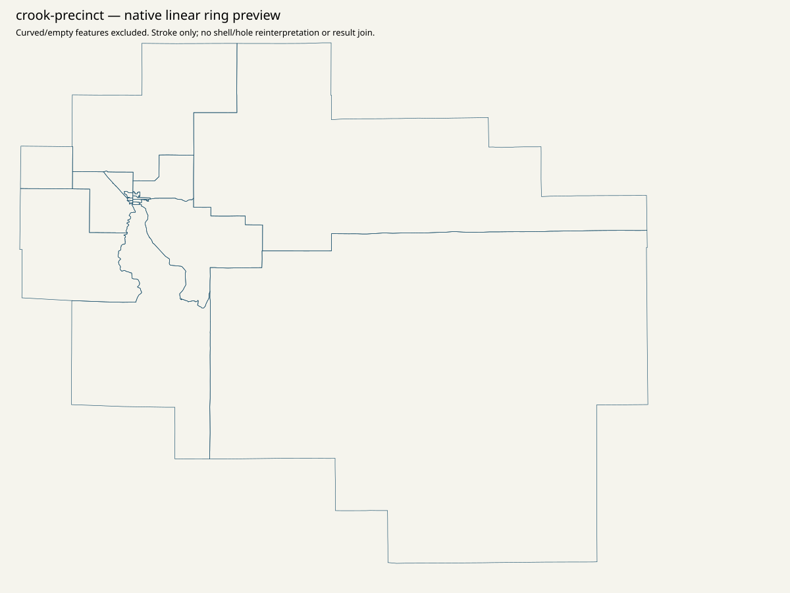
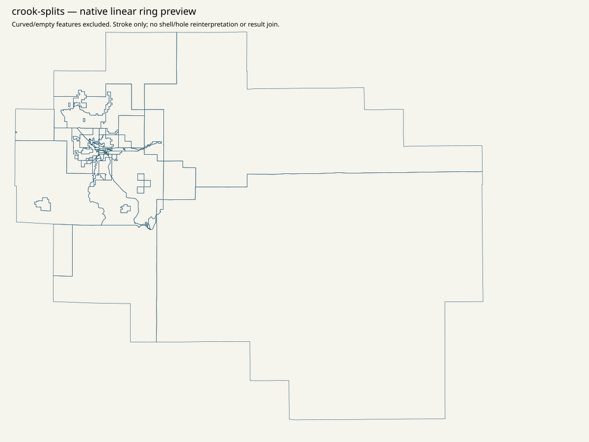

Canonical statewide native order / top15 / minimum80 / priority / remainder: NULL. All36 parents remain in scope. Geographic assets are qualified evidence; no result-leaf polygon joins or spatial vote, ballot or registration allocation.
County GIS Data page explicitly links its public REST directory; Clerks metadata supplies actual layer4 Voting Precincts and layer14 Precinct Splits. Complete native snapshots retain 17 and63 features; four split geometries are empty/nonpolygon in the returned data. CRS2914, source ring defects and all attributes remain. This does not establish result membership or November legal approval.
{
"CRS": "Per-service complete native spatialReference and per-SHP original PRJ retained. PDF CRS unknown unless explicitly printed; no CRS inferred from appearance.",
"access": "Every retained attempt/status/error and captured source clock is in linked receipts. County GIS Data page explicitly links its public REST directory; Clerks metadata supplies actual layer4 Voting Precincts and layer14 Precinct Splits. Complete native snapshots retain 17 and63 features; four split geometries are empty/nonpolygon in the returned data. CRS2914, source ring defects and all attributes remain. This does not establish result membership or November legal approval.",
"finer_ID": "No source row number/name/count/FIPS/shape used as a finer/current result-ID join. Native GIS IDs are retrieval/attribute evidence only.",
"legal": "No approved November2026 legal precinct outline/crosswalk. County2010 outlines and source ring diagnostics do not establish current legal gaps/overlaps/slivers.",
"native_result_membership": "Unknown2024native membership retained; unavailable parent is not a synthetic native unit.",
"physical": "No precinct-to-physical-polling-site crosswalk established. Office, drop box, municipality, ward and ballot style are separate scopes.",
"vintage": "Resource-specific source publication labels/metadata; historical2010 county context is explicitly separate. No same-vintage result/legal approval."
}{
"county": "Crook",
"county_fips": "41013",
"county_key": "OR:county:41013",
"county_presidential_reported_votes": 16297,
"county_presidential_named_votes": 16213,
"county_source_Misc": 84,
"native_priority_status": "unavailable_not_acquired_in_bounded_pass",
"native_reporting_unit_count": null,
"source_native_constituents": [],
"source_administrative_presentations": [],
"unknown_native_membership": true,
"approved_current_election": false,
"approved_current_geometry": false,
"historical_originals": [
{
"year": 2020,
"source_key": "2020-06",
"member_name": "11.03.20/Crook.pdf",
"archive_source_id": "sos-2020-precinct-zip-observed-download",
"original_sha256": "6d032bc5cc22b31936ac63f6bbd8a72506d2265e339f79445ea97f623fa3876d",
"original_bytes": 2837597,
"candidate_native_extraction_status": "see native/county-reconciliation.json; incomplete groups remain explicit"
},
{
"year": 2022,
"source_key": "2022-06",
"member_name": "Crook.pdf",
"archive_source_id": "sos-2022-precinct-zip-observed-download",
"original_sha256": "68b3de05af4cfadc7268a3e36af5ff0e749f8f2d985bb380522471f54131780b",
"original_bytes": 2833232,
"candidate_native_extraction_status": "see native/county-reconciliation.json; incomplete groups remain explicit"
}
]
}{
"full_object_semantic_sha256": "4c07cb9eadd6acd1781a5e17ed706e241b5596ddb9916baeaa3228537b5c2116",
"pointer": "/all_36_county_parents/6",
"whole_file": {
"bytes": 891659,
"path": "data/turnout/priority-set.json",
"sha256": "06faf77e374172fadabf9b99d5acfd64a5658ccf76e1b4310602bca4274f9add"
}
}Complete snapshot/metadata/page inventory
{'linear_features': 17, 'nonsimple_closed_rings': 0, 'open_rings': 0, 'short_rings': 0}

Complete snapshot/metadata/page inventory
{'empty_or_nonpolygon_excluded': 4, 'linear_features': 59, 'nonsimple_closed_rings': 2, 'open_rings': 0, 'short_rings': 0}

Complete snapshot/metadata/page inventory
{'linear_features': 36, 'nonsimple_closed_rings': 0, 'open_rings': 0, 'short_rings': 0}

Unknown native membership is retained as one unavailable parent case; it is not a native result row.